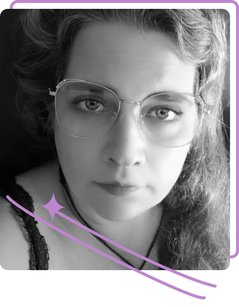

Experiências Profissionais...
Designer Gráfico e Web
2012 - Presente - Nerd Shop
CEO
Criação e desenvolvimento da Web Page e loja Virtual.
Criação da identidade visual e marca registrada.
Desenvolvimento de produtos exclusivos.
Responsavel pelas redes sociais.
Desenvolvimento de embalagens, impressos e papelaria
Estágio de Pesquisa e Restauração
2008 /2009 - FAU-UFRJ
Bolsa de iniciação científica, no acervo hitórico da FAU.
Conservação, Restauração e presquisa na área de Arquitetura e Urbanismo.
Restauração e concervação dos projetos originais de predios Históricos.

Acesse minhas redes sociais.
 Linkedin
Linkedin
 GitHub
GitHub
 Behance
Behance
 DeviantArt
DeviantArt